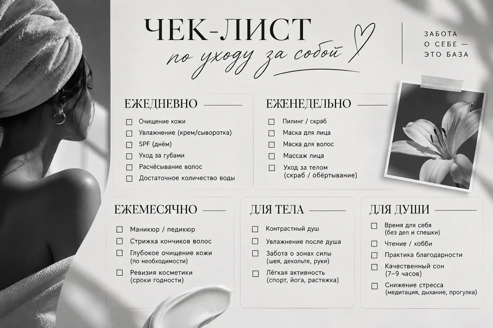
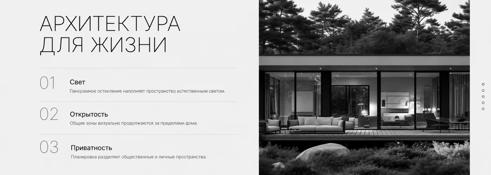
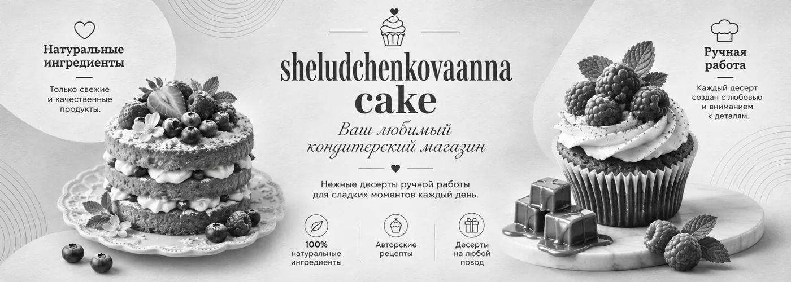
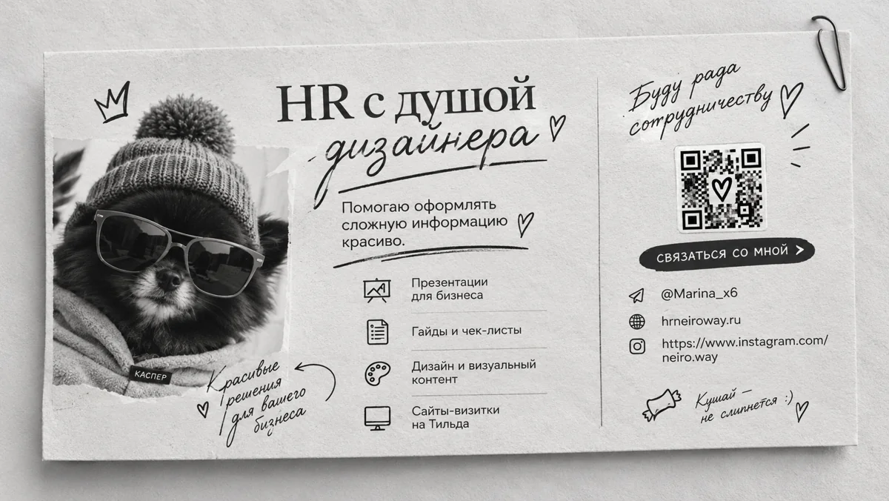

01Оформление для вас
Гайды и методички
Соберу ваши знания в понятный материал: руководство, пособие, рабочую тетрадь или сопровождение к курсу. Помогу выстроить структуру и оформить содержание.
Для экспертов и личного бренда
От презентаций и гайдов до визиток и каталогов
Посмотреть направленияСоберу ваши знания в понятный материал: руководство, пособие, рабочую тетрадь или сопровождение к курсу. Помогу выстроить структуру и оформить содержание.
Выделю главное и разложу действия по шагам. Оформлю короткий материал, который удобно сохранить, распечатать или открыть с телефона.

Помогу представить услуги, товары и условия без перегруженных таблиц. Продуманный порядок, заметные цены и единое оформление.
Создам презентацию, которая не просто красиво выглядит, а помогает донести главное. Продуманная структура, понятная подача и визуальные акценты — чтобы вашу идею заметили, поняли и запомнили.

Разработаю стильный дизайн, расставлю визуальные акценты и подготовлю макет для печати или размещения в электронном виде.

Создам оригинальный дизайн визиток, стикеров и календарей с учётом вашего стиля и пожеланий. Подготовлю макеты для печати или цифрового использования.

[02] Примеры оформления
Наведите на название — увидите превью
Нажмите — откроется работа в цветеНажмите на проект —
посмотрите работу в цвете
Здесь — мои работы для разных задач и аудиторий. Состав и содержание вашего проекта согласуем отдельно
[03] Отзывы клиентов
Методическое пособие
Марина очень четко реализовала мое методическое пособие!)
Нашли быстро общий язык, учла все пожелания по оформлению и быстро скинула готовый результат!) вообшем я довольна и точно обращусь еще!) спасибо, Мариночка
Оформление гайда
Обратилась к Марине за оформлением гайда. Отправила несколько примеров, то которые мне нравятся, и она с первого раза поняла мои предпочтения по стилю.
Лаконично, стильно, без лишних деталей. Очень понравились шрифты и само оформление.
От меня отдельная благодарность за профессионализм! Приятно работать с человеком, у которого есть вкус и классное видение. Спасибо за быструю и четкую работу. Обращусь снова!
Соцсети и женский клуб
Марина, большое спасибо тебе за помощь с оформлением соцсетей и моего женского клуба «Путь к себе» ❤️ Мне нравится, что ты всегда понимаешь, чего я хочу, и попадаешь прямо в точку. Всё получилось красиво и в моём стиле. Уверена, твоя помощь мне ещё не раз понадобится 😊
Рекомендую: качественно, стильно, эстетично, в срок!
Листовка и открытка
Марина, большое спасибо за работу! Листовка получилась яркая, красивая и аппетитная, именно то, что я хотела 😊 Потом сделали ещё открытку для моих клиентов и материал для детей в школу. С тобой очень легко и приятно работать. Желаю побольше интересных творческих задач и хороших клиентов!
[04] Давайте знакомиться
Напишите мне в Telegram или на почту. Можно прислать текст, черновик или просто описать задачу